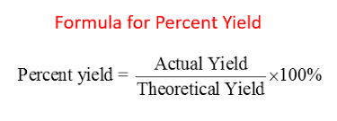
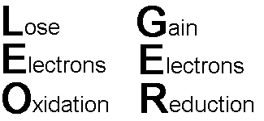
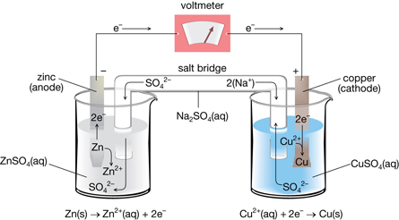
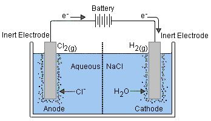

Net ionic equations should have only the ions that precipitate or react during a reaction.
There should be no spectator ions, an ion that exists in the same form on both sides of the equation, in a net ionic equation.
Souble vs Insouble
Group 1 ions, ammonium, and nitrate are always soluble.
Percent Yeild

It is a yield of products which tends to be less than a hundred percent. This shows that the reactants aren’t pure.
Redox Reactions

Redox Reactions are reactions that contain oxidation and reduction half-reactions in them.
Oxidation half-reactions are written with the electrons placed at the product side.
Reduction half-reactions are written with the electrons placed at the reactant side.
Species that appear at the top of the series in your Electrode Potential table gain electrons most readily and therefore have the most positive E values. They are easily reduced and are the best oxidizing agent.
Species that appear at the bottom of the series in your Electrode Potential table lose electrons most readily and therefore have the most negative E values. They are easily oxidized and are the best reducing agent.
Electrochemical Cells
Voltaic cells are spontaneous which means that the voltage of the cells must be positive.

Electrolysis are nonspontaneous and require a battery to work as a form of energy to force a reaction to happen.

All electrochemical cells need a salt bridge to maintain neutrality.
Anode is where the oxidation half-reaction takes place.
Cathode is where the reduction half-reaction takes place.